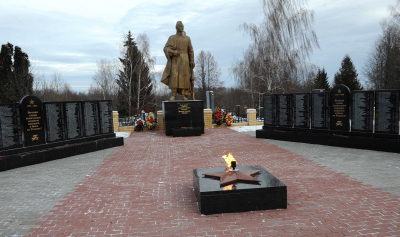
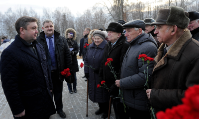
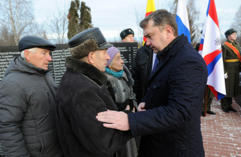

3 декабря жители России впервые отметили новую дату – День памяти неизвестного солдата. На мемориалах и воинских захоронениях страны проводились торжественные мероприятия.
Губернатор Андрей Шевелёв в ходе рабочей поездки в Торжокский район принял участие в церемонии возложения цветов к Мемориалу воинской славы.

День памяти неизвестного солдата приурочен к 3 декабря 1966 года, когда в 25-ю годовщину разгрома фашистских войск под Москвой прах Неизвестного солдата был перенесен из братской могилы на 41-м километре Ленинградского шоссе в Александровский сад у стен Кремля. На месте захоронения 8 мая 1967 года был открыт мемориальный архитектурный ансамбль и зажжен Вечный огонь. На плите, лежащей на могиле, сделана надпись: «Имя твое неизвестно. Подвиг твой бессмертен».
В этот знаменательный день на Мемориал славы в Торжке почтить память тех, кто отдал жизнь за Победу, пришли ветераны войны, жители города, школьники, представители общественных и молодежных организаций.
Воинское захоронение расположено на кладбище при церкви Иоанна Богослова. Здесь покоятся останки 1752 человек. В 1958 году на этом месте был установлен памятник. Сегодня благоустройству мемориала местная власть и общественность уделяют особое внимание.

- Сегодня на территории нашего региона и всей страны проходят траурные мероприятия, где мы вспоминаем неизвестного солдата, который отдал жизнь за свою Родину. Очень приятно, что торжественное мероприятие на торжокской земле проходит вместе с ветеранами, школьниками на обновленном месте, изменившемся в лучшую сторону мемориале, - отметил Андрей Шевелёв.
Большое участие в подготовке мемориала к 70-летию Победы принимают предприниматели муниципального образования.
- Мы вышли с инициативой помочь в восстановлении данного мемориала, чтобы не словом, а делом отдать дань памяти этим великим людям, которые ценой своей жизни дали нам возможность работать, расти, развиваться, - рассказал генеральный директор ООО «Радуга» Алексей Туренков.

О важности благоустройства мемориала говорили и многие, кто пришел сегодня почтить память о неизвестном солдате и тех, кто покоится в воинском захоронении.
- Они заслужили, чтобы для них, погибших, это сделали. Преобразили их, придали праздничный вид. Я очень довольна, - поделилась участница Великой Отечественной войны Анна Никаноровна Бевз.
- 9 мая этого года, когда здесь проходили мероприятия, посвященные Дню Победы, мы с главой города в очередной раз отметили плачевное состояние мемориала. Поэтому те мероприятия, которые здесь проводятся – это очень здорово, очень нужно и нашему городу, и грядущему поколению, - уверен председатель Торжокского отделения Российского союза ветеранов Афганистана Владимир Житков.
- Люди стремятся к тому, чтобы память осталась на долгие годы. И самое главное - наполнить это место трепетной памятью. Чтобы сюда приходили горожане, приносили цветы и вспоминали тех, кто погиб за наш с вами светлый сегодняшний день, - считает учитель истории школы №3 г.Торжка Любовь Татаренко.
По данным пресс-службы Правительства Тверской области.